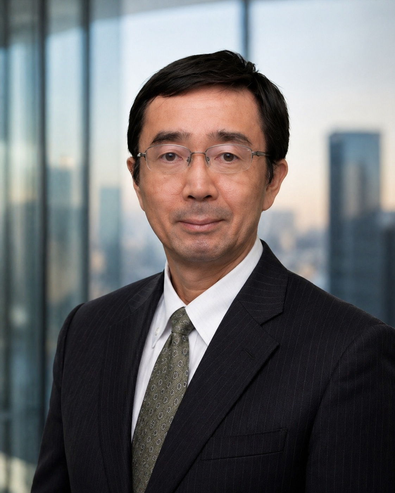
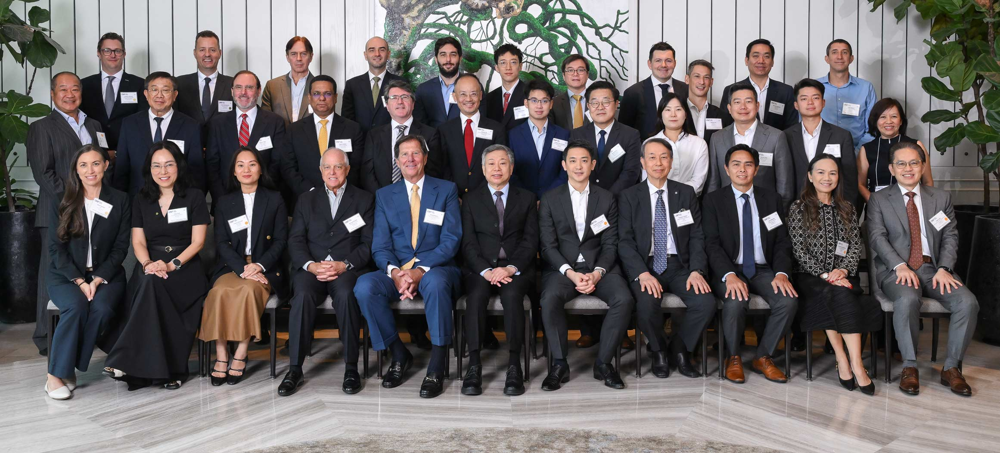

Message
Expertise and integrity, for the optimal solution.
As global capital markets undergo a structural transition, the management decisions of Japanese companies have become more complex than ever. Whether in business portfolio realignment, cross-border investment, or allocation to alternative assets including real estate, the value of objective advice independent of conflicts of interest has only grown.
Beyond investment banking advisory, my career has spanned principal investment, investment strategy formulation at operating companies, and real estate finance, placing me on both sides of transactions. Drawing on a deep understanding of buyer and seller, advisor and principal, the role of an independent investment banking boutique is to present truly meaningful options to our clients.
Through Global Alliance Partners (GAP), an alliance with partners across more than 20 countries, we consistently support our clients in realizing their strategies, including cross-border transactions. With expertise and integrity, we strive to earn your trust.

View profile
Toshiyuki Shoji is CQC's head of execution, leveraging a 23-year career in investment banking and principal investment at Nomura Securities (8 years in New York), followed by experience in M&A advisory and principal investment at Rakuten, MA Platform, and Tokai Tokyo Securities.
At Nomura, he was engaged in real estate finance and investment in both the US and Japan, alongside principal investment activities. His US-Japan real estate transaction experience extended into broad involvement with REITs and CMBS (Commercial Mortgage-Backed Securities) and other real estate securitizations.
Post-Nomura, his career encompassed business development and corporate venture capital investment at Rakuten Group, large-scale international resort development strategy at MA Platform (Mori Trust Group), and M&A advisory at Tokai Tokyo Securities. This dual perspective, operating-company principal and advisor, has become CQC's distinct edge in translating between buyer- and seller-side logics to structure transactions.
Areas of expertise: capital markets transactions, alternative investment, M&A and capital-raising advisory, and real estate finance and investment.
Career
- Nomura Securities (Tokyo & New York, 23 years total; 8 years in NY)
- Rakuten Group (business development, venture and private equity investment)
- MA Platform Co., Ltd. (Mori Trust Group; international resort development strategy)
- Tokai Tokyo Securities and other financial institutions (M&A advisory)
- Capital Quest Corporation, Ltd. — Representative Director (current)
Education & Credentials
- The University of Tokyo, Faculty of Law
- University of Michigan, MBA
- CFA Institute, Chartered Financial Analyst
20+ Country Investment Banking Network
Independent investment banks across countries pool their expertise to execute cross-border transactions.
